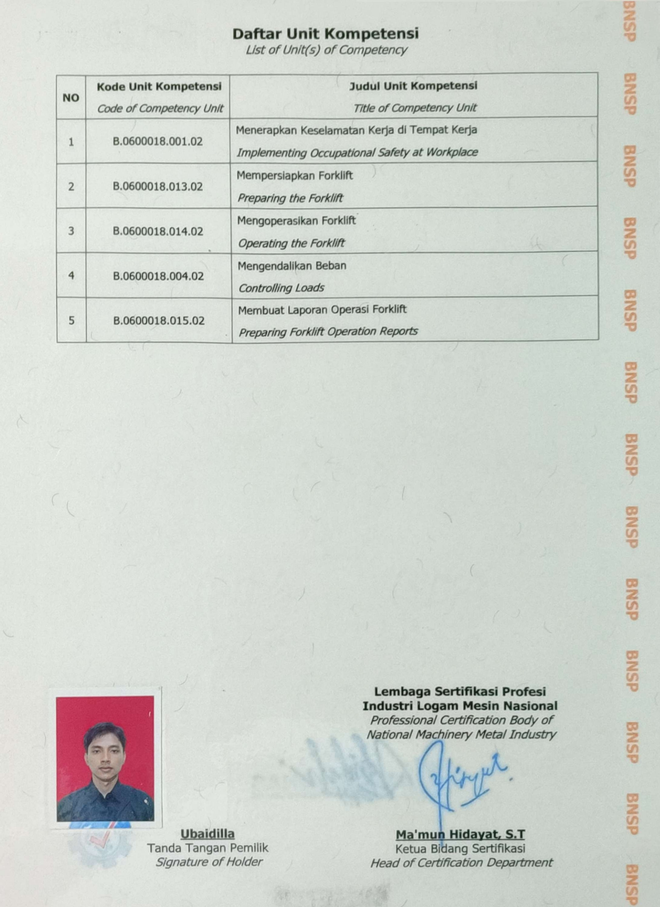
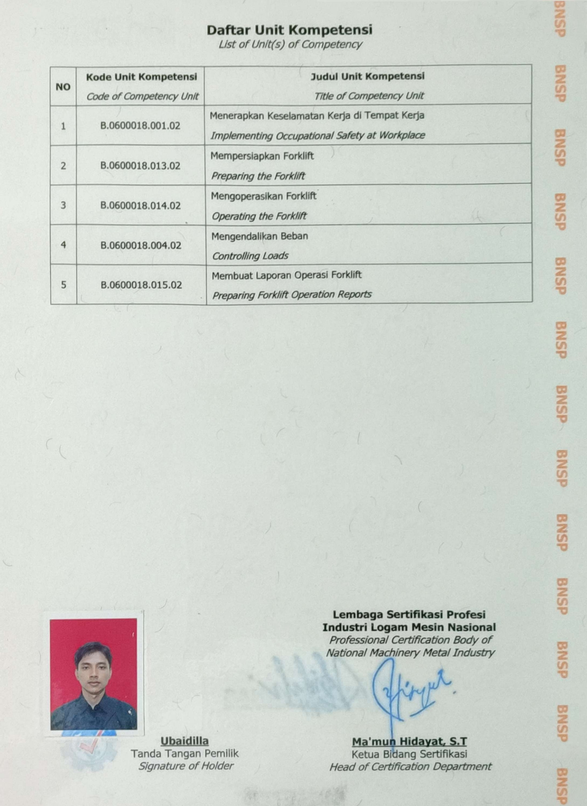

Ubaidilla
Informatics student
About Me
I am an enthusiastic Informatics student exploring the world of technology. Currently, I am in the learning phase, deepening my understanding of programming concepts, data management, and information systems. With a strong curiosity, I constantly strive to gain a deeper grasp of technology and sharpen my technical skills through various academic projects and challenges.
Beyond developing technical skills, I uphold discipline and responsibility in both my education and work. I have experience balancing academic and professional activities, which has helped me improve my time management and problem-solving abilities. I believe that learning is not just about mastering theories but also about cultivating critical and adaptive thinking in a rapidly evolving technological landscape.
Education
| Institution | Major | Year |
|---|---|---|
| Universitas Siber Asia | Informatics | Ongoing |
| SMK Prima Bakti | Vehicle Engineering | 2020 |
 
